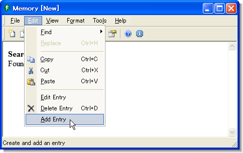
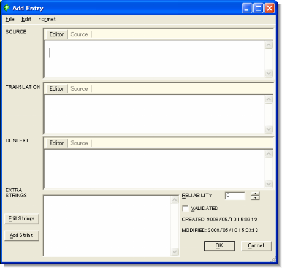
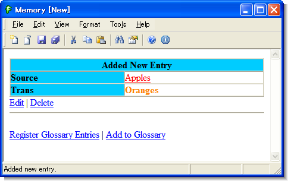

An entry, or translation unit (TU), is the basic unit of Felix translation memories (TMs) and glossaries. An entry consists of a source segment and its translation, as well as other optional information such as context, when the entry was created and by whom, and reliability.


| SOURCE: | The source for the memory record (required ) |
| TRANSLATION: | The translation for the memory record (required ) |
| CONTEXT: | The context for the memory record (optional ) |
| RELIABILITY: | The reliability score for the memory record (optional ) |
| VALIDATED: | Whether the memory record is validated (optional ) |
| CREATED: | The date the record was created (read-only ) |
| MODIFIED: | The date the record was last modified (read-only ) |
| EXTRA STRINGS [1]: | User-defined extra strings (optional ). Use the Edit Strings and Add String buttons to edit/add user extra strings. |
In Editor mode, a full range of text-formatting features is available for the source, translation, and context fields. In addition to common keyboard shortcuts such as Control-B for bold and Control-I for italic, you can set the font information for the current selection from the Font dialog. To call up the Font dialog, from the Format menu, select Font….
If you would like to insert a special symbol, select Format >> Insert Symbol…. The Insert Symbol dialog appears. Enter the HTML symbolic name or unicode number, without the leading ampersand (&) or trailing semicolon (;). For instance, entering “beta” will input ”β,” and entering ”#128” will input ”€.” The symbol is inserted at the current cursor position.
Because this is a dialog, the return key is handled in a special way. Pressing the return key by itself is the same as pressing the OK button. To insert a pagraph marker (<P>), press Ctrl + Return. To insert a newline (<BR>), press Shift + Return.
When you are finished entering the entry information, click OK .
